From dollar bin thrift stores to high-end consignment, I spoke to other shoppers, and learned more about what makes it all so fun (and what parts aren’t as fun)
Thriftie • Early-Stage Startup
Real-world thrifting made easy with AI
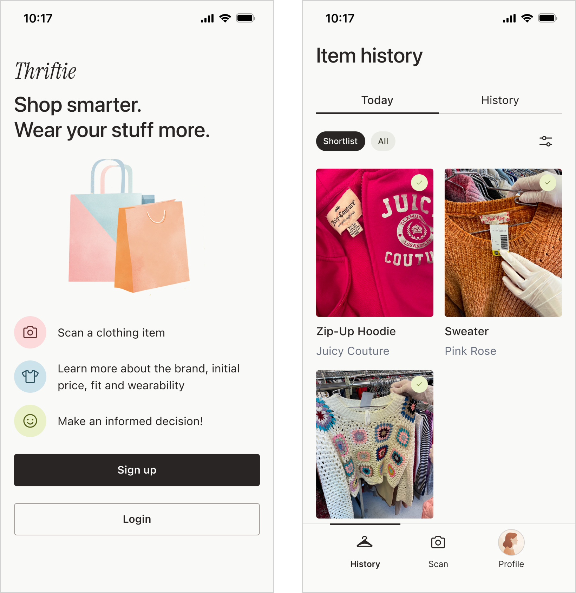
Project overview
What’s Thriftie?
Thrifty helps shoppers make confident thrift decisions in-store using AI.
The Access Screener is a digital triage tool that helps I designed Thrifty from zero to one, shaping the product experience from early concept through validated prototype.
How does Thrifty help?
Without Thrifty, many shoppers rely on guesswork when thrifting. They struggle to assess value, recognize quality, and decide what to buy versus leave behind.
Thrifty supports decision-making in the moment by providing lightweight contextual guidance. That helps users feel confident that they’ve made a good choice without disrupting the in-store experience.
Validation & early outcomes
Although Thrifty has not yet been released, early usability testing and concept validation revealed several promising signals:
- Participants were able to complete the scanning flow without assistance
- Users described the experience as helpful without being distracting
- Test participants reported increased confidence when evaluating unfamiliar items
- Early feedback suggested the tool would be especially valuable for vintage and lesser-known brands
These findings helped validate the core concept and informed subsequent design iterations.
My role
- Led end-to-end 0 → 1 design for the app
- Shaped the information architecture and collaborated with engineering on AI-driven logic
- Designed the scanning flow and guided system language
- Conducted field research, user interviews, and usability testing with thrifters
- Collaborated closely with product and engineering throughout
- Created a foundational UI pattern library to support future scaling
+ enjoyed a lot of thrift trips in the name of research! :)
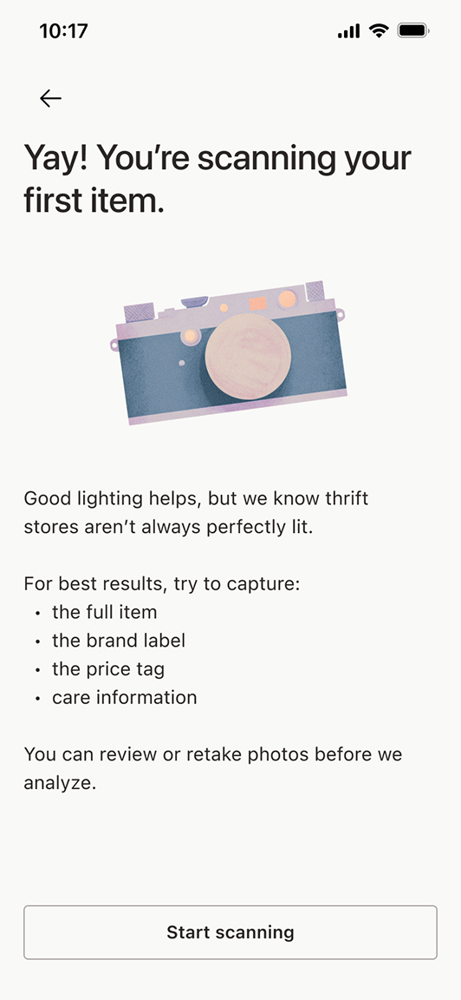
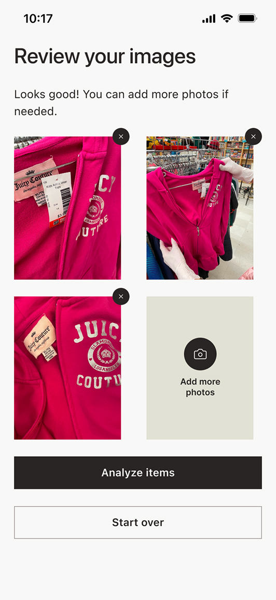
Background and pain points
Thrifting is a booming industry! Gen Z especially loves a good thrift find.
$82 billion
60%
75%
But because of its popularity, it’s getting harder.
Prices are rising, inventory is more competitive, and shoppers still want fast confident decisions without losing the thrill of the hunt.
The existing thrifting tools prioritize speed, fakes detection, and flip value. We wanted to focus on personal context, taste, and intentional purchases. (That you could still resell later if you wanted.)
We wanted to create a product that would help people thrift. To start, we conducted online surveys and a lot of field research.
I have been a huge thrifter for yearssssssss, so this was a dream project!
Research
Let’s hear from the people!
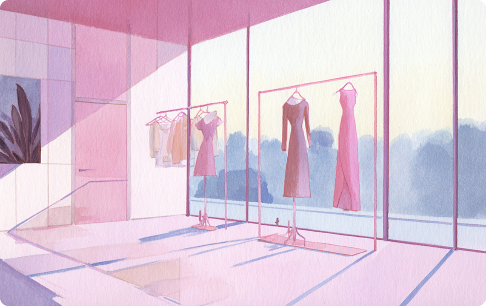
I also thrifted a lot myself to personally feel the shoppers’ joys and woes.
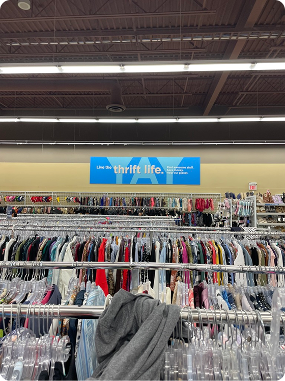
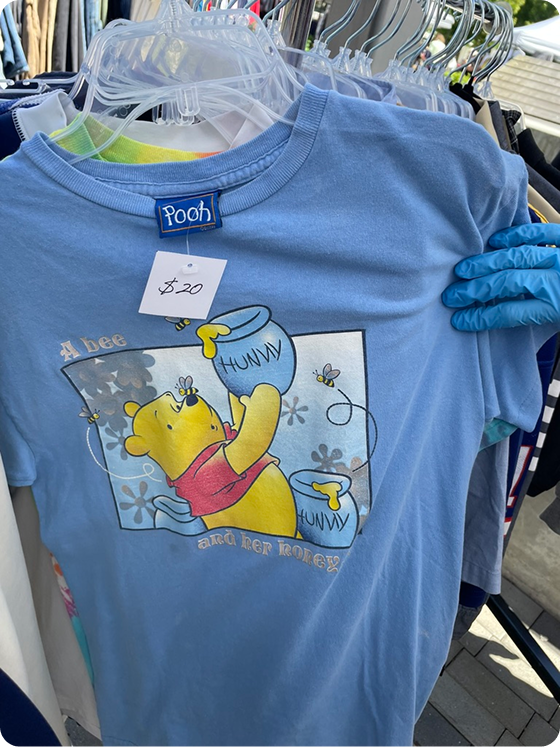
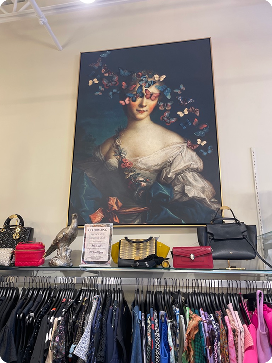
We heard from fellow thrifters and learned a lot:
New to thrifting
I find it kind of hard to understand if a piece is good quality or not. Sometimes I buy something and it falls apart really quick.
Vintage-curious shopper
So I like older pieces, but I don’t really know the labels of the era that well. I kinda wanna know if it’s the Aritzia or the SHEIN of the 90s, like what am I dealing with here?
Casual reseller
I have a pretty good sense of what an item will cost, but it’d be great if I could look it up right at the store.
Long-time thrifter
It used to be real-life thrifting was always a better deal than online, but lately some stores have been hiking up prices like crazy. I want to make sure I’m getting the best deal!
The main finding
No matter their experience, shoppers had a hard time understanding if something was actually worth buying in the moment for the price.
What if thrift shoppers could get confident guidance as they shop?
Where and when?
In-store clothing thrifting
Different thrift stores, brands, and eras all have their own quirks. With limited time and attention, Thrifty focuses on helping shoppers evaluate items directly at the rack, where decisions actually happen.
What?
Real-time item insights from a single scan
Use computer vision and contextual analysis to understand the item, surface brand and quality signals, and provide light guidance through a simple mobile flow designed for in-store use.
Business model?
Freemium
Offer a limited number of monthly scanning and evaluation features for free, with the ability to purchase more and gain access to additional features. This supports trust and long-term value without relying on ads.
Design goals
-
Make it fast and easy to decide if an item is worth buying
-
Surface clear visual context around quality, brand, and value
-
Support confident in-store decisions without disrupting the thrill of thrifting
Lightweight testing
Ideas are great. But how will they perform in the real world?
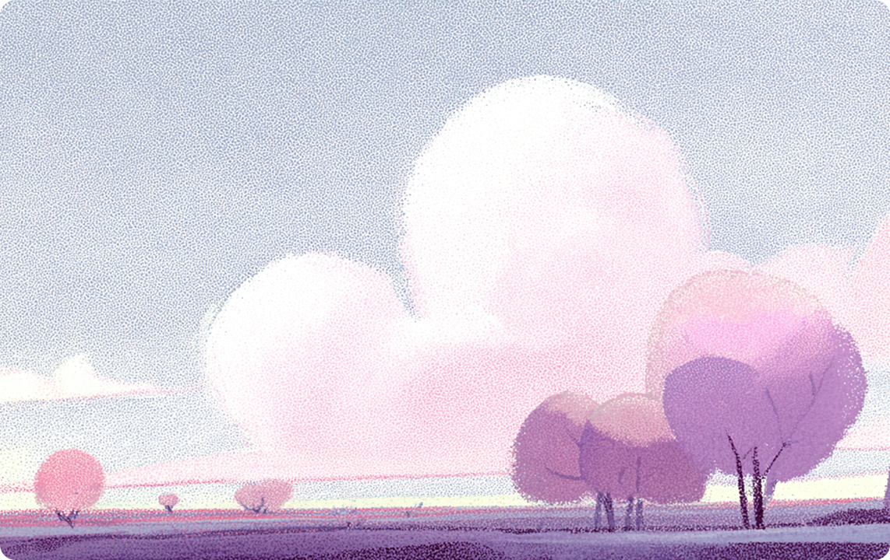
Early testing showed that some shoppers wanted a lot of detail, while others wanted a quick overview. We knew the product needed to support both.
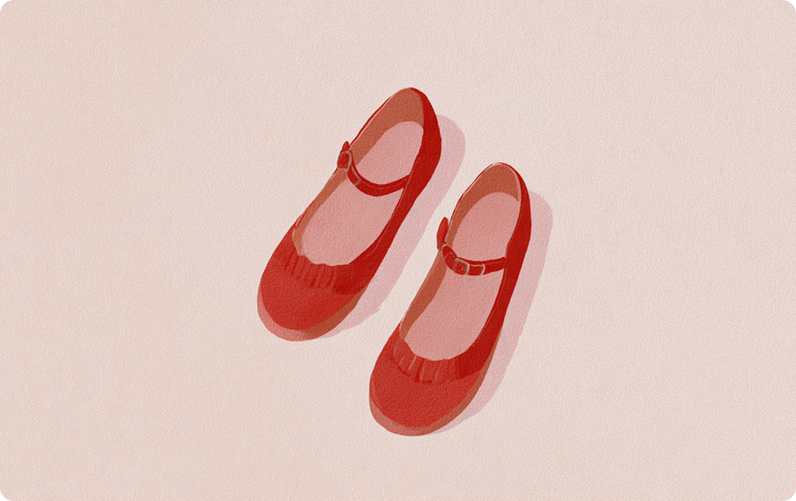
II ran Wizard of Oz tests with a few thrifters: I Googled and shared item insights as if they were automated. Shoppers said the guidance felt helpful, especially for unfamiliar or older items.
We built a lightweight prototype to test the scanning flow in-store. It helped us confirm the core value and learn more about the constraints around speed and attention.
Design highlights
A little context goes a long way
During onboarding, Thriftie invites users to complete an optional questionnaire. If they do, this information is used to personalize recommendations, especially for things like fit and sizing.
Maximum value, minimal time
I used an LLM to help design questions that were easy for users to answer and produced reliable information for the model. We avoided open-ended questions (too ambiguous). Instead I used multiple-choice responses so the model could generate more consistent and useful guidance.
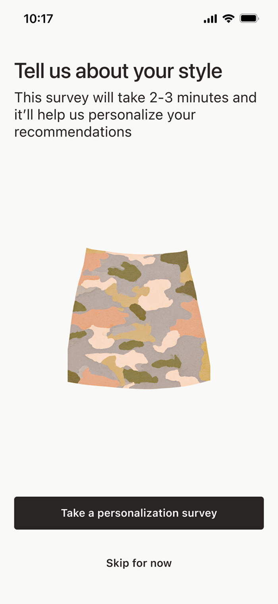
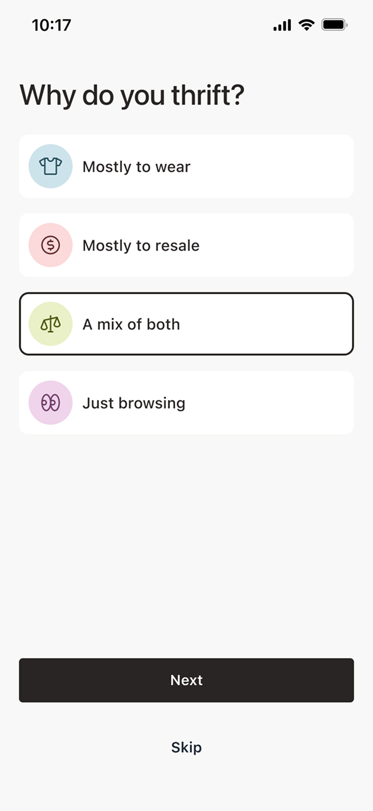
Empty states and tutorials
First-time users haven’t scanned anything yet and don’t know what matters when scanning. Clear empty states and lightweight tutorials help set expectations and guide users before their first thrift trip.
Starting point
I initially considered dropping users directly into scan mode. But most people don’t download the app while standing in a thrift store!
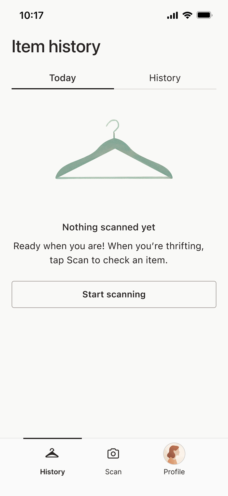
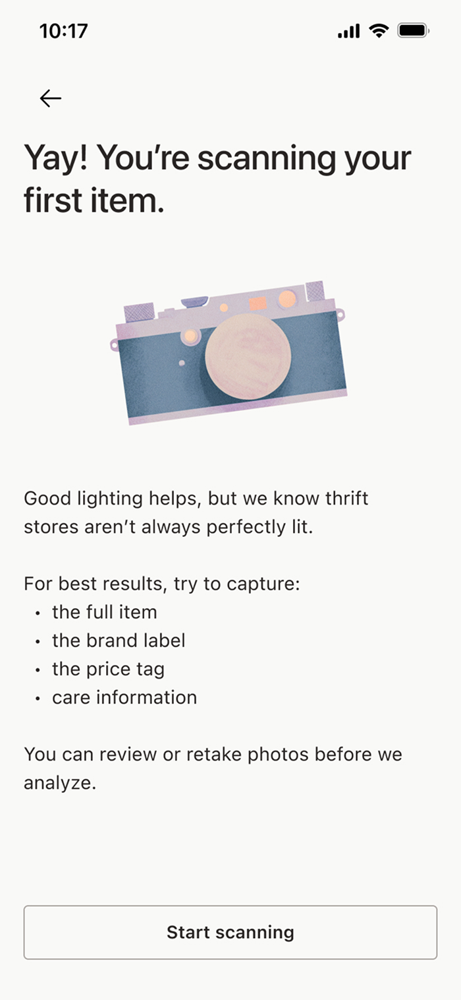
Real world thrifting
Thriftie is designed for decisions in brick-and-mortar thrift stores. The users can quickly snap a few pictures without breaking their shopping flow.
Review
I added a review step so users can check their photos before scanning and avoid wasting a scan. We also explored giving real-time photo guidance, but that would have required early image analysis. Instead, we opted for a simpler safeguard: if the photos won’t produce a reliable result, the scan is stopped and the user is told what’s missing.
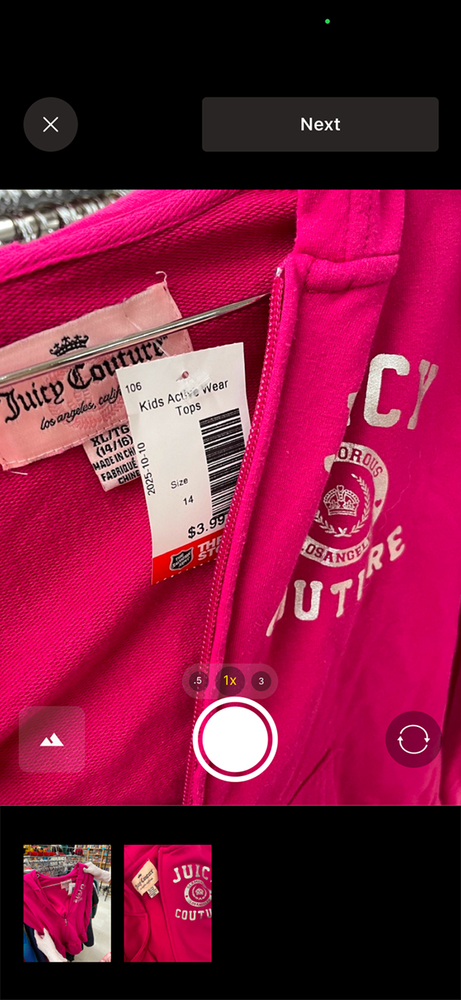
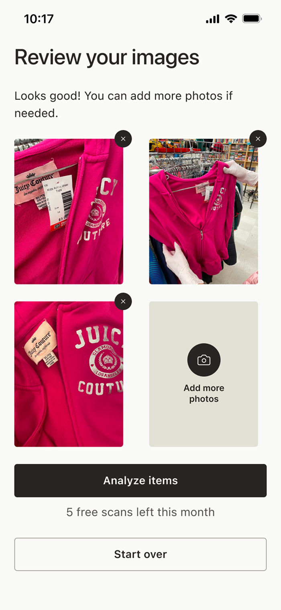
See-at-a-glance
To balance between the users who want a lot of information and users who don’t, I made the information hidden but easily accessible. The accordion labels also let the user know what the overall verdict is even before they click through.
Keeping power users in mind
What if users prefer a different sorting order or don’t care about some of the categories? We created a way to reorder and pick and choose. This may not be used by every user, but the ones who need it, will appreciate the flexibility it gives them.
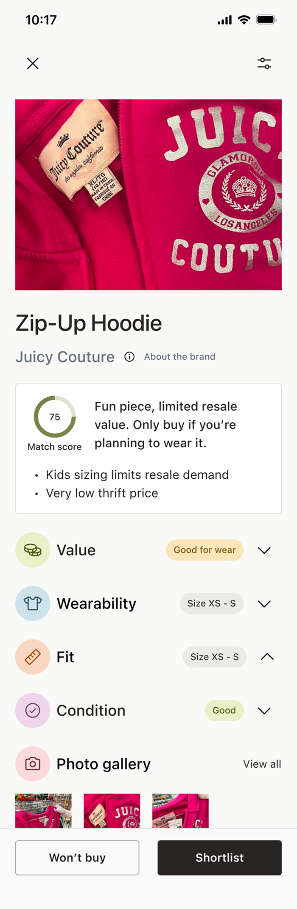
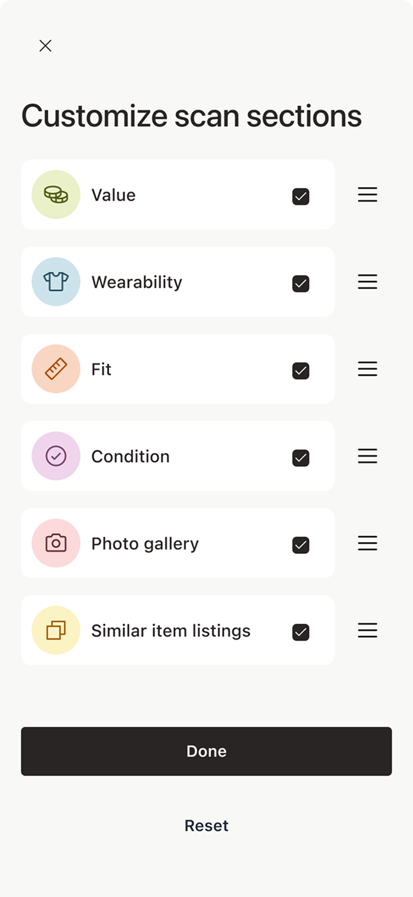
Scanning head to toe
The sections are based on the learnings about what users think of when thrifting. Each accordion answers a specific question, so users can easily see what they care about most.
Skim or dive in
This approach increases vertical scrolling, but keeps each item readable and easy to scan in a busy store. Users can pick and choose what they read.
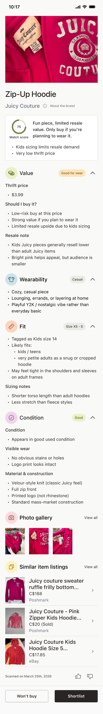
Shortlisting
The users can review their cart and compare different items from their trip without digging through their real cart or Googling brands.
Daily reset
I wanted shoppers to be able to compare items within the context of a single thrift trip. From talking to users, they preferred the scans resetting daily instead of per session, since a day still felt like one continuous trip even if they left and came back or visited multiple stores. A “session” added too much complexity to the mental model as well.
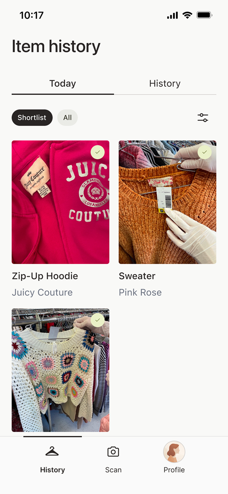
Reading is fundamental (unless you prefer to listen)
I redesigned content pages with large visuals and time estimates. Keeping accessibility in mind, we added auto-generated captions for videos and planned voice-over support for articles.
So many options, so little time
We explored adding audio as well, but audio required significantly more engineering effort and ongoing maintenance. Considering the scope and timeline, I prioritized the AI summary as a higher-impact, lower-cost way to improve accessibility. The audio support was still planned as a future enhancement.
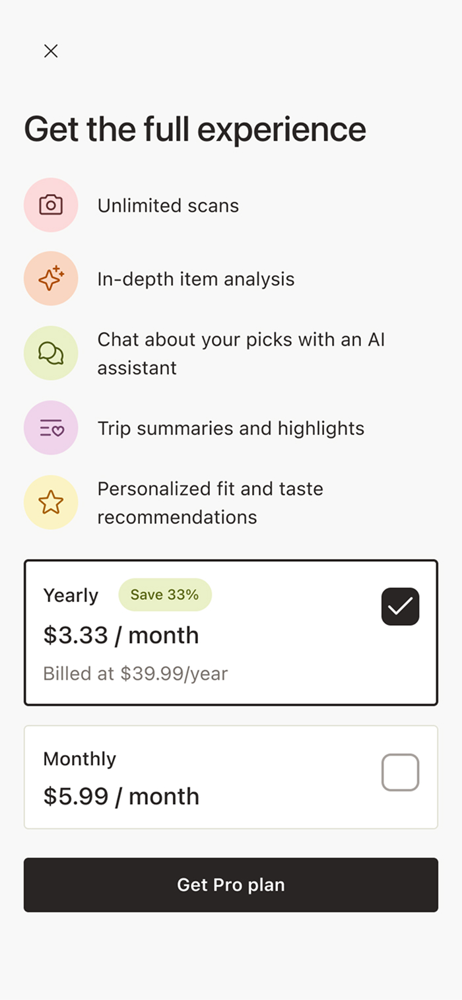
Outcomes
As of today, this app hasn’t been released to the public yet. However...
90%
30s
Helping users when they need thrift most
Users consistently described the experience as reassuring and confidence-boosting, especially when evaluating unfamiliar brands or vintage pieces.
Daily news
The app was well-understood. The daily reset model was especially well-received and preferred over session-based tracking, simplifying the mental model for thrift trips.
Expected post-launch outcomes
- Helping shoppers make quicker, more confident decisions without overwhelming them
- Supporting different thrifting goals (wear, resale, browsing) through flexible analysis sections
- Creating a natural upgrade and monetization moment by limiting scans instead of core features
If continued, I would...
-
Introduce a wishlist & no-buy lists that help users remember what they want, what they should pass on, and why
-
Help users learn from past trips by surfacing patterns in what they buy, skip, or regret over time.
-
Add small budget and restraint tools that encourage intentional thrifting rather than impulse buys.
Learnings
Only a Sith deals in absolutes
Thrifting decisions are situational. An item can be a great buy for wear and a bad one for resale, or vice versa. Also, people are all individuals with their own tastes! So guidance needs to reflect context, not a single “worth it” score.
It’s all about well-placed safeguards
Light guardrails like photo review and quality checks prevented frustration without trying to control every edge case.
Keeping AI humble
AI worked best when it supported judgment and highlighted trade-offs. Not when it tried to give definitive answers in a domain full of ambiguity! We can’t tell the user if they need this or don’t. All we can do is give them the info and support their choicemaking.
Thank you for reading!
Explore other case studies using the buttons below.